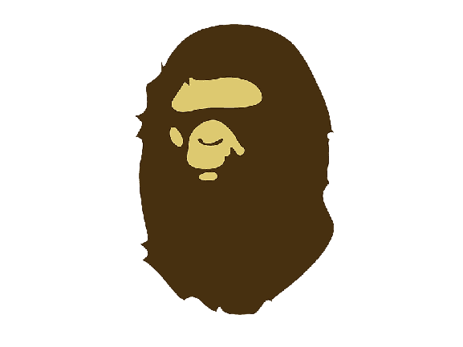

Products from BAPE


A Bathing Ape
일반적으로 알려진 대부분의 제품들이 이 라인이며 BAPE를 대표하는 라인입니다.
BAPE하면 떠올리는 카모 패턴의 후드티와 컬리지 로고 티셔츠가 대표적입니다.


BAPESTA
BAPE의 신발 라인업입니다.
의류나 악세사리가 이 라인으로 나오는 경우가 있지만 보통 나이키의 에어포스 1 제품을 패러디한 제품이 유명합니다.

BAPEX
BAPE가 럭셔리 시계 브랜드의 대명사 롤렉스(ROLEX)를 오마주한 시계 라인입니다.
전반적인 롤렉스의 실루엣을 그대로 가져오면서,
BAPE의 대표 이미지인 원숭이 얼굴을 새겨넣어 새로운 시계를 완성했습니다.
이전